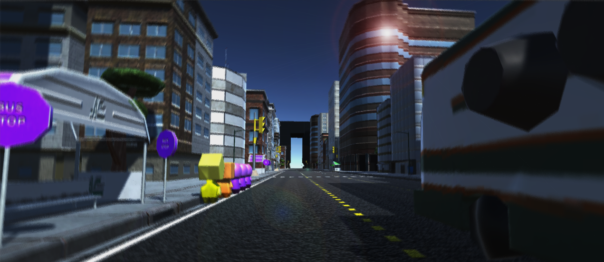
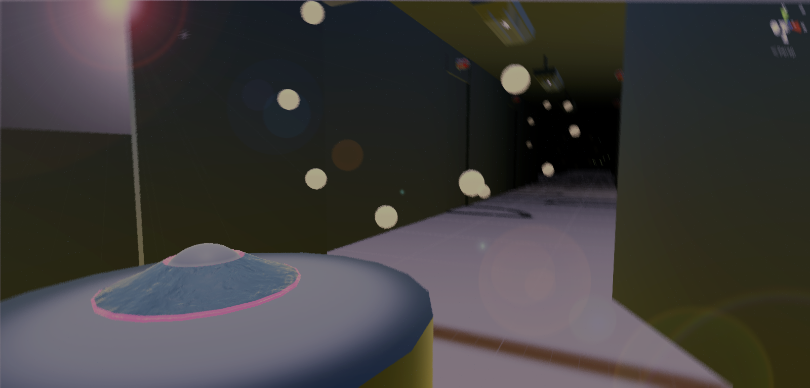

My Projects
Drive
An AC Transit Game in Unity C#
This project is a mobile game being made in Unity for a client, AC Transit. The project was started by Cogswell and offered as a class called Game Studio. We worked in a team of about 20 split into multiple departments each with a lead. This furthered my experience with working in a big multi-department team and furthered my skills with handling git repositories. The game itself is an endless runner in which the player is a bus avoiding traffic and picking up/dropping off color coded passengers at their corresponding bus stop. The game is coded using C# and is source controlled using a git GUI called SourceTree. This game is expected to be released by the end of Summer 2017.

Manifold
A Unity Prototype in C#
This project was inspired by the upcoming game release, Manifold Garden. While it was still building a name for itself, a fellow game developer showed it to me and challenged me to create a similar environment in which the player feels as though they are in an infinite world that is efficient and can run at 60 fps or higher. I took on on this challenge and completed a basic prototype in a weekend. As of right now, the player can infinitely walk or fall in any direction. Since the initial prototype I haven't added on new functionalities but worked on making it as efficient as possible. Currently the game runs at 60 fps or higher on laptops on the highest graphics settings, while on the lowest settings can reach an upward of 300-400 fps. I have also recently adapted this project to work in VR, stably running at over 90 fps.
Pathfinder
Dijkstra's Algorithm in C++
This project was a demonstration of my understanding of Data Structures, Sorting Algorithms, and Use of Advanced C++ Libraries. Currently it parses a text file for a numeric representation of connections on a node-graph with weighted vertices, then runs Dijkstra's algorithm implemented using a Min Heap, then returns the shortest (or least weighted) path between any specified nodes. This project can be easily converted to a back-end for any use of the shortest path algorithm including travel systems like shortest distance, cheapest route, shortest time, etc.

Icarus
A Unity Project in C#
Project Icarus is a collection of experiments put together in Unity using C#. Parts of this project were later adapter into a demo game for a Level Design class. In this project, I experimented with interaction between real-world variables and in-game objects, bezier curves, fractals and Unity tool creation. The demo game is a prototype for an endless runner which utilizes scripted events, menuing, a basic tutorial, points and obstacles that I put together.

Photoshop
A collection of some of my work
I have been dabbling in Photoshop since my high school days, but I started to learn it in June of 2016. I spent a couple of months learning to work in Photoshop properly and non-destructively. Although I started learning Photoshop by fixing and combining images in natural-looking ways, I recently have been using it to make icons and some interesting compilations.